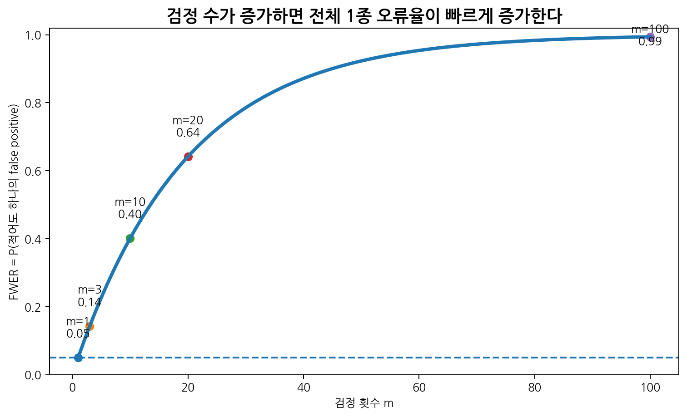
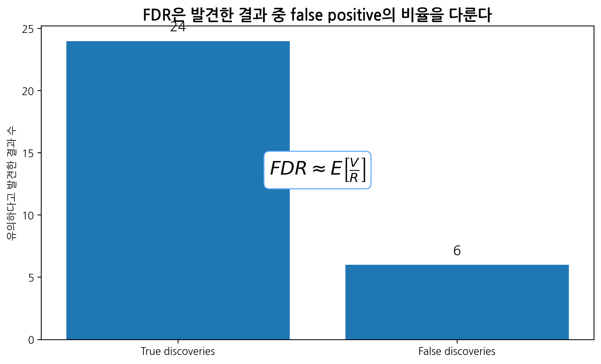
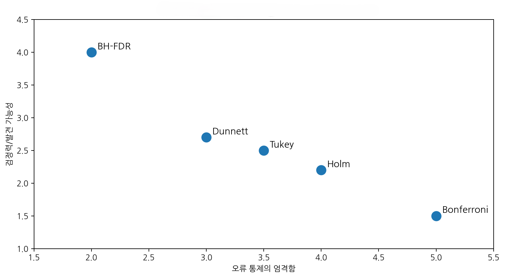
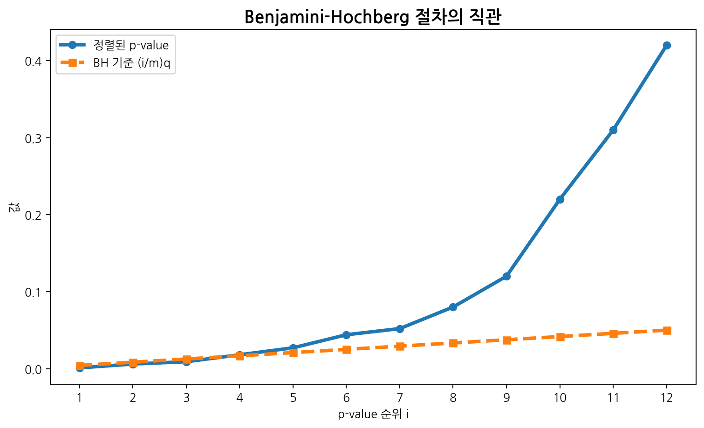

이번 장에서는 다중비교(multiple comparisons)와 오류율 보정(error rate control)을 다룬다. 2장에서는 ANOVA를 통해 여러 집단 평균을 한 번에 비교하는 방법을 배웠다. 그러나 ANOVA가 유의하다는 사실만으로는 “어느 집단과 어느 집단이 다른가?”를 알 수 없다. 이를 확인하려면 여러 쌍별 비교를 수행해야 한다.
문제는 검정을 많이 할수록 우연히 유의한 결과가 나올 가능성이 증가한다는 점이다. 하나의 검정에서 유의수준을 0.05로 설정하면 귀무가설이 참일 때 잘못 유의하다고 결론 내릴 확률은 5%이다. 그러나 10번, 100번, 10,000번의 검정을 수행하면 전체 연구에서 적어도 하나의 false positive가 나올 가능성은 훨씬 커진다.

다중비교 문제는 단순히 통계적 기술 문제가 아니다. 의학 연구에서는 다음과 같은 실제 판단에 영향을 미친다.
어떤 치료군이 효과적인가?
어떤 용량군이 대조군보다 우월한가?
어떤 하위군에서 치료효과가 나타나는가?
어떤 바이오마커가 질병과 관련되는가?
여러 결과변수 중 어떤 결과를 강조할 것인가?
따라서 다중비교 보정은 “p-value를 기계적으로 조정하는 절차”가 아니라, 연구 질문의 구조와 오류 허용 수준을 명확히 하는 과정이다.
3.1 다중비교 문제의 본질
3.1.1 하나의 검정과 여러 검정
하나의 가설검정에서 유의수준을 \(\alpha=0.05\)로 설정하면, 귀무가설이 참일 때 잘못 기각할 확률은 다음과 같다.
처음 두 개만 유의하다고 판단한다. 세 번째에서 기준을 만족하지 못했으므로 이후는 더 보지 않고 유의하지 않다고 판단한다.
3.4 False discovery rate
3.4.1 FDR의 개념
FWER는 false positive가 하나라도 나올 확률을 통제한다. 이는 확증적 임상시험처럼 false positive를 강하게 억제해야 하는 상황에서 유용하다. 그러나 유전체 연구처럼 수천, 수만 개 검정을 수행하는 탐색 연구에서는 FWER 통제가 지나치게 보수적일 수 있다.
이때 사용하는 개념이 false discovery rate, FDR이다.
FDR은 유의하다고 발견한 결과들 중 false positive가 차지하는 비율의 기대값이다.
\[FDR
=
E\left[
\frac{V}{R}
\right]\]
여기서
\(V\): false positive 수
\(R\): 유의하다고 발견한 전체 결과 수
이다. 단, \(R=0\)일 때는 이 비율을 0으로 정의한다.

FWER와 FDR의 차이
구분
FWER
FDR
통제 대상
false positive가 하나라도 나올 확률
발견 중 false positive 비율
보수성
더 보수적
덜 보수적
적합한 상황
확증적 연구, 주요 endpoint
탐색적 연구, 고차원 자료
대표 방법
Bonferroni, Holm, Tukey, Dunnett
Benjamini-Hochberg
해석
오류 하나도 엄격히 제한
일부 false discovery를 허용

3.4.2 Benjamini-Hochberg procedure
Benjamini-Hochberg procedure는 가장 널리 쓰이는 FDR 통제 방법이다. 목표 FDR 수준을 \(q\)라고 하자. p-value를 작은 순서대로 정렬한다.
\[p_{(1)} \leq p_{(2)} \leq \cdots \leq p_{(m)}\]
각 순위 \(i\)에 대해 기준값은 다음과 같다.
\[\frac{i}{m}q\]
절차는 다음과 같다.
p-value를 작은 순서로 정렬한다.
각 p-value를 \((i/m)q\)와 비교한다.
조건 \(p_{(i)} \leq (i/m)q\)를 만족하는 가장 큰 \(i\)를 찾는다.
그 순위까지의 p-value를 유의하다고 판단한다.

BH 예제
검정 수가 \(m=6\)이고, 목표 FDR이 \(q=0.05\)라고 하자. 정렬된 p-value가 다음과 같다고 하자.
순위 \(i\)
p-value \(p_{(i)}\)
BH 기준 \((i/m)q\)
1
0.002
0.0083
2
0.009
0.0167
3
0.017
0.0250
4
0.041
0.0333
5
0.060
0.0417
6
0.120
0.0500
조건을 만족하는 가장 큰 순위는 \(i=3\)이다. 따라서 처음 세 개의 p-value를 유의하다고 판단한다.
3.5 다중비교가 발생하는 연구 상황
3.5.1 여러 치료군
가장 전형적인 상황은 여러 치료군이 있는 임상시험이다.
예를 들어 네 집단이 있다고 하자.
Placebo
Low dose
Medium dose
High dose
이때 가능한 비교는 여러 가지이다.
모든 쌍별 비교
각 용량군과 placebo 비교
용량-반응 추세 검정
고용량군과 저용량군 비교
연구질문에 따라 적절한 비교 방법이 달라진다.
3.5.2 여러 결과변수
의학 연구에서는 하나의 연구에서 여러 결과변수를 평가할 수 있다.
예를 들어 당뇨병 중재 연구에서 다음을 모두 평가할 수 있다.
HbA1c
공복혈당
체중
혈압
LDL cholesterol
삶의 질 점수
여러 결과변수를 모두 primary endpoint처럼 해석하면 false positive 위험이 증가한다. 따라서 primary endpoint, secondary endpoint, exploratory endpoint를 사전에 구분해야 한다.
3.5.3 여러 시점
반복 측정 연구에서 여러 시점의 결과를 각각 검정하면 다중비교 문제가 생긴다.
예를 들어 치료 후 1개월, 3개월, 6개월, 12개월 시점에서 각각 군간 차이를 검정하면 네 번의 검정을 수행하게 된다. 시간에 따른 변화를 모델링하는 혼합모형 또는 반복측정 모형을 사용하는 것이 더 적절할 수 있다.
3.5.4 하위군 분석
하위군 분석(subgroup analysis)은 특히 조심해야 한다.
예를 들어 전체 치료효과가 유의하지 않았지만 다음 하위군 중 하나에서 유의한 효과가 나타났다고 하자.
남성
여성
65세 미만
65세 이상
당뇨병 있음
당뇨병 없음
흡연자
비흡연자
많은 하위군을 탐색하면 우연히 유의한 결과가 나올 수 있다. 하위군 분석은 사전에 정의되어야 하며, 상호작용 검정을 함께 고려해야 한다. 하위군 안에서만 p-value가 유의하다는 사실만으로 “하위군 효과”를 주장해서는 안 된다. 하위군 간 효과 차이를 주장하려면 interaction test가 필요하다.
3.6 임상시험에서의 다중성
3.6.1 Primary endpoint와 secondary endpoint
임상시험에서는 primary endpoint(1차 평가 변수)를 사전에 명확히 정의한다. 이는 연구의 주요 결론을 결정하는 결과변수이다. Secondary endpoint는 보조적 결과이며, exploratory endpoint는 가설 생성 목적일 수 있다.
Endpoint 유형
해석 강도
다중성 고려
Primary endpoint
가장 강함
엄격히 통제 필요
Key secondary endpoint
비교적 강함
계층적 검정 등 고려
Secondary endpoint
보조적
보정 또는 신중한 해석
Exploratory endpoint
가설 생성
FDR 또는 기술적 해석
3.6.2 계층적 검정
계층적 검정(hierarchical testing)은 endpoint 또는 가설의 순서를 사전에 정해 두고 순서대로 검정하는 방법이다.
예를 들어 다음 순서를 정할 수 있다.
Primary endpoint
Key secondary endpoint 1
Key secondary endpoint 2
Key secondary endpoint 3
앞선 검정이 유의할 때만 다음 검정으로 넘어간다. 중간에 유의하지 않으면 이후 결과는 명목상 p-value로만 해석한다.
계층적 검정은 전체 1종 오류율을 통제하면서 주요 endpoint의 검정력을 유지하는 데 도움이 된다.
3.6.3 Gatekeeping strategy
복잡한 임상시험에서는 여러 endpoint와 여러 용량군이 있을 수 있다. 이때 gatekeeping strategy를 사용하여 어떤 가설 묶음을 어떤 순서로 검정할지 사전에 정의한다.
예를 들어
전체 치료효과 검정
고용량군 vs 대조군 검정
저용량군 vs 대조군 검정
key secondary endpoint 검정
처럼 사전에 정해진 순서를 사용한다.
핵심은 사후적으로 유리한 결과만 선택하지 않도록 분석계획서에 명시하는 것이다.
3.7 R 실습
3.7.1 예제 데이터 생성
세 치료군의 혈압 감소량을 비교하는 자료를 생성한다.
set.seed(3030)n_per_group <-35group <-factor(rep(c("Control", "DrugA", "DrugB", "DrugC"), each = n_per_group),levels =c("Control", "DrugA", "DrugB", "DrugC"))reduction <-c(rnorm(n_per_group, mean =5, sd =6),rnorm(n_per_group, mean =9, sd =6),rnorm(n_per_group, mean =12, sd =6),rnorm(n_per_group, mean =13, sd =6))dat <-data.frame(group = group,reduction = reduction)head(dat)
group reduction
1 Control 0.1557208
2 Control -1.6146349
3 Control 6.5014987
4 Control 14.4138626
5 Control 5.2779295
6 Control 9.7301848
Pairwise comparisons using t tests with pooled SD
data: dat$reduction and dat$group
Control DrugA DrugB
DrugA 4.1e-05 - -
DrugB 1.8e-11 0.0024 -
DrugC 1.4e-08 0.0731 0.1988
P value adjustment method: none
Pairwise comparisons using t tests with pooled SD
data: dat$reduction and dat$group
Control DrugA DrugB
DrugA 0.00025 - -
DrugB 1.1e-10 0.01422 -
DrugC 8.1e-08 0.43838 1.00000
P value adjustment method: bonferroni
Pairwise comparisons using t tests with pooled SD
data: dat$reduction and dat$group
Control DrugA DrugB
DrugA 0.00016 - -
DrugB 1.1e-10 0.00711 -
DrugC 6.8e-08 0.14613 0.19878
P value adjustment method: holm
보정하지 않은 결과와 보정한 결과를 비교한다.
3.7.7 Dunnett test 개념적 구현
기본 R에는 Dunnett test가 내장되어 있지 않다. 여러 처리군을 Control과만 비교하고 p-value를 Holm 방식으로 보정하는 간단한 예를 보자.
p_control <-c(t.test(reduction ~ group, data =subset(dat, group %in%c("Control", "DrugA")))$p.value,t.test(reduction ~ group, data =subset(dat, group %in%c("Control", "DrugB")))$p.value,t.test(reduction ~ group, data =subset(dat, group %in%c("Control", "DrugC")))$p.value)names(p_control) <-c("DrugA-Control", "DrugB-Control", "DrugC-Control")p_control